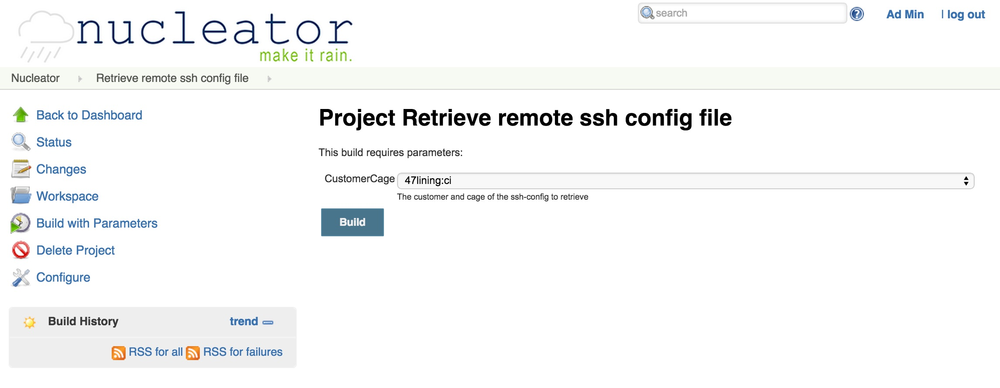
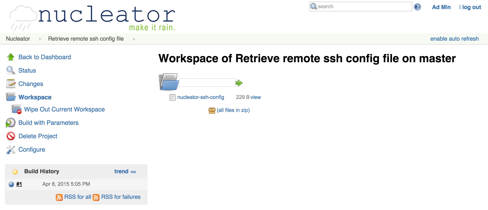

Retrieving a Remote Ssh Config
Retrieve a remotely created ssh config file
If you use the NUI to configure a new cage, the nucleator machine instance creates a new config file for ssh on that instance. If you want to ssh to one of those machines (bastion or nat), you will need the ssh configuration on your local machine. This NUI project enables you to retrieve the config file into the workspace of the project and then download to your machine.
Step 1 - Run the project, select the cage for which you want the ssh config file:

Step 2 - Download the file from the workspace:
